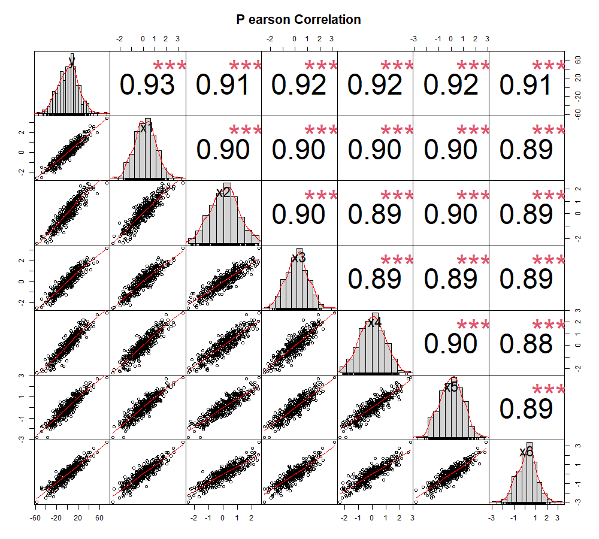
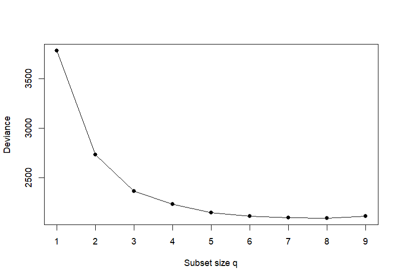
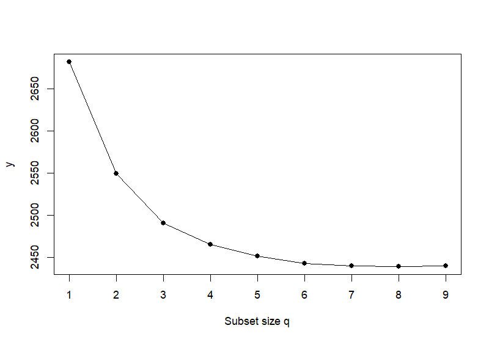

What "model selection" means here
In earlier chapters the predictors were given and we only had to estimate the model. Often, though, you have many candidate X variables and every one of them seems relevant. Model selection (also called variable selection) means choosing which X's go into the model, not the form of the model: we stay inside linear regression throughout this chapter.
You're packing for a trip with a small suitcase. Ten items all look useful, but several do the same job (three jumpers). Packing everything makes the bag heavy without making you warmer. Model selection picks the smallest set of items that still covers everything you need.
Parsimony
A model with 6 predictors is easier to explain, cheaper to collect data for, and easier to use than one with 10, if it predicts almost as well.
Multicollinearity
When predictors carry the same information, their coefficients become unstable and their standard errors big. Dropping the redundant ones helps.
Fitting the noise
Every extra predictor makes the fit to this sample a little better, even a useless one. That gain doesn't carry over to new data.
Ten predictors is a small problem. In "big data" settings there can be hundreds or thousands of candidate X's, and machine-learning methods (lasso, random forests…) are also used for selection. For a linear model, the classical statistical tools in this chapter are usually all you need.
The data and its correlations
MyData = read.csv("SelectData.csv" )
head(MyData)
summary(MyData)
class(MyData)
View(MyData)
y x1 x2 x3 x4 x5 ... 1 -10.399069 0.1950507 -0.60472721 -0.2718370 0.01085532 -0.11763451 2 8.058654 0.1416447 0.28551537 0.5070357 0.37122531 0.48890778 3 -37.566008 -1.7451947 -2.36930465 -1.8715327 -1.91408022 -1.92803267 ... [1] "data.frame"
400 rows, a response y (from −57 to 74, mean 0.48) and ten predictors x1…x10, each centred near 0 with a spread of about ±3. The variables have no real-world meaning: it's a simulated dataset, deliberately made hard, with every X strongly related to y and to each other. In most real data only some pairs are highly correlated, and the choice is easier.
cor_matrix = cor(MyData[,])
cor_matrix
library("PerformanceAnalytics")
chart.Correlation(MyData[,(1:7)])
chart.Correlation(MyData[,(1:7)], histogram=F)
y x1 x2 x3 x4 x5 x6 x7 x8 x9 x10 y 1.00 0.93 0.91 0.92 0.92 0.92 0.91 0.93 0.91 0.92 0.92 x1 0.93 1.00 0.90 0.90 0.90 0.90 0.89 0.90 0.89 0.90 0.90 x2 0.91 0.90 1.00 0.90 0.89 0.90 0.89 0.90 0.89 0.90 0.90 ...

MyData[, (1:7)] takes only the first 7 columns (y, x1…x6) so the chart stays readable; histogram = F removes the histograms.The commented line write.csv(cor_matrix, "cor_matrix.csv") saves the matrix so you can open it in Excel and paste it into a report. cor(MyData, method = "spearman") gives the rank version from Chapter 3.
Start with everything: the full model and VIF
fit1 <- lm(y~., data = MyData[,]) summary(fit1)
Call:
lm(formula = y ~ ., data = MyData)
Coefficients:
Estimate Std. Error t value Pr(>|t|)
(Intercept) 0.1873 0.2565 0.730 0.465578
x1 3.3561 0.7906 4.245 2.73e-05 ***
x2 0.8045 0.7614 1.057 0.291370
x3 1.7682 0.7642 2.314 0.021205 *
x4 2.9252 0.7531 3.884 0.000121 ***
x5 1.2846 0.7704 1.667 0.096243 .
x6 0.8483 0.7450 1.139 0.255534
x7 3.9759 0.8110 4.902 1.39e-06 ***
x8 1.1853 0.7661 1.547 0.122625
x9 2.0467 0.7718 2.652 0.008332 **
x10 1.8446 0.8022 2.299 0.022012 *
Residual standard error: 5.025 on 389 degrees of freedom
Multiple R-squared: 0.9332, Adjusted R-squared: 0.9315
F-statistic: 543.6 on 10 and 389 DF, p-value: < 2.2e-16Measuring the overlap: the variance inflation factor
car::vif(fit1)
x1 x2 x3 x4 x5 x6 x7 x8
9.007636 8.811772 8.724226 8.394400 8.932316 8.055560 10.095669 8.530942
x9 x10
8.824395 9.487960car::vif runs the function vif from the car package without loading the whole package with library() (the :: means "from this package"). For each predictor, R regresses it on all the other predictors and gets an R²ⱼ:
< 5 fine · 5–10 possible problem · > 10 serious
Between 5 and 10, books disagree on how worried to be. A VIF of 1 means no overlap at all. The standard error grows with √VIF, so VIF = 9 triples it.
All between 8.1 and 10.1
Every predictor is heavily overlapping with the rest; x7 even passes 10. That explains the large standard errors (≈ 0.77 each) and the non-significant x2, x5, x6, x8.
How do we judge "better"? The selection criteria
Every selection method compares models with some score. They all balance fit (small residuals) against size (number of coefficients k). With n observations and residual sum of squares RSS:
| Criterion | Formula (linear model) | Better is | Penalty for each extra coefficient |
|---|---|---|---|
| R² | 1 − RSS / TSS | larger | none: it can only go up |
| adjusted R² | 1 − (1 − R²)(n − 1)/(n − k) | larger | small |
| AIC | n·log(RSS/n) + 2k (+ constant) | smaller | 2 |
| AICc | AIC + 2k(k + 1)/(n − k − 1) | smaller | a bit more than 2 (for small samples) |
| BIC | n·log(RSS/n) + log(n)·k (+ constant) | smaller | log(n) = log(400) ≈ 6 |
AIC and BIC are like a price tag: every new predictor must "pay" for its place by lowering the residuals enough. Under AIC it costs 2 points, under BIC about 6 (with 400 rows). So BIC is stricter and tends to choose smaller models.
stepAIC prints AIC = 1302.37 for the full model, but AIC(fit1) gives 2439.52. Both are right: stepAIC uses extractAIC, which leaves out a constant that is the same for every model fitted to these 400 rows (n·log(2π) + n + 2). Differences between models, and therefore the ranking, are identical. Just never compare a number from one with a number from the other.
Method 1: stepwise regression with stepAIC
stepAIC (package MASS, which comes with R) changes the model one predictor at a time, and at each step makes the move that lowers AIC the most. It stops when no single move lowers AIC any further.
- Forward: start small, add the predictor that lowers AIC the most, repeat.
- Backward: start with all predictors, remove the one whose removal lowers AIC the most, repeat.
- Both (stepwise): like backward, but at every step a previously removed predictor may also come back in.
1. Forward
library(MASS) fit <- lm(y~.,data=MyData) step <- stepAIC(fit, direction="forward") step$anova # display results summary(step)
Start: AIC=1302.37
y ~ x1 + x2 + x3 + x4 + x5 + x6 + x7 + x8 + x9 + x10
Initial Model:
y ~ x1 + x2 + x3 + x4 + x5 + x6 + x7 + x8 + x9 + x10
Final Model:
y ~ x1 + x2 + x3 + x4 + x5 + x6 + x7 + x8 + x9 + x10For a real forward search, start from the model with only the intercept and tell stepAIC how far it may go with scope:
empty <- lm(y ~ 1, data = MyData) step <- stepAIC(empty, scope = formula(fit), direction = "forward") step$anova
Step Df Deviance Resid. Df Resid. Dev AIC
1 399 147070.990 2364.882
2 + x7 1 128264.17262 398 18806.817 1544.204
3 + x1 1 5358.94105 397 13447.876 1412.045
4 + x4 1 1910.61030 396 11537.266 1352.749
5 + x3 1 760.44920 395 10776.817 1327.475
6 + x9 1 417.31226 394 10359.504 1313.678
7 + x10 1 273.31287 393 10086.191 1304.983
8 + x5 1 124.10017 392 9962.091 1302.031
9 + x8 1 71.78633 391 9890.305 1301.138x7 enters first (the strongest correlation with y), and the RSS ("Resid. Dev") collapses from 147,071 to 18,807. Each later step helps less. After x8, adding x6 or x2 would raise AIC, so it stops with 8 predictors. This version isn't in the lecture script; it's here so you can see forward selection actually working.
2. Backward
step <- stepAIC(fit, direction="backward") step$anova # display results summary(step)
Start: AIC=1302.37 y ~ x1 + x2 + x3 + x4 + x5 + x6 + x7 + x8 + x9 + x10 Df Sum of Sq RSS AIC - x2 1 28.19 9850.2 1301.5 - x6 1 32.74 9854.8 1301.7 <none> 9822.0 1302.4 - x8 1 60.44 9882.5 1302.8 - x5 1 70.20 9892.2 1303.2 - x10 1 133.50 9955.5 1305.8 - x3 1 135.16 9957.2 1305.8 - x9 1 177.57 9999.6 1307.5 - x4 1 380.91 10202.9 1315.6 - x1 1 455.04 10277.1 1318.5 - x7 1 606.81 10428.8 1324.3 Step: AIC=1301.51 y ~ x1 + x3 + x4 + x5 + x6 + x7 + x8 + x9 + x10 Df Sum of Sq RSS AIC - x6 1 40.09 9890.3 1301.1 <none> 9850.2 1301.5 ... Step: AIC=1301.14 y ~ x1 + x3 + x4 + x5 + x7 + x8 + x9 + x10 Df Sum of Sq RSS AIC <none> 9890.3 1301.1 - x8 1 71.79 9962.1 1302.0 ... Step Df Deviance Resid. Df Resid. Dev AIC 1 389 9822.026 1302.367 2 - x2 1 28.18623 390 9850.212 1301.513 3 - x6 1 40.09254 391 9890.305 1301.138
summary(step)
Call:
lm(formula = y ~ x1 + x3 + x4 + x5 + x7 + x8 + x9 + x10, data = MyData)
Coefficients:
Estimate Std. Error t value Pr(>|t|)
(Intercept) 0.2335 0.2532 0.922 0.35700
x1 3.6236 0.7737 4.684 3.89e-06 ***
x3 1.9741 0.7541 2.618 0.00919 **
x4 3.0718 0.7478 4.108 4.87e-05 ***
x5 1.4758 0.7623 1.936 0.05358 .
x7 4.1254 0.8052 5.123 4.73e-07 ***
x8 1.2861 0.7635 1.685 0.09286 .
x9 2.3314 0.7526 3.098 0.00209 **
x10 2.1233 0.7848 2.706 0.00712 **
Residual standard error: 5.029 on 391 degrees of freedom
Multiple R-squared: 0.9328, Adjusted R-squared: 0.9314
F-statistic: 677.9 on 8 and 391 DF, p-value: < 2.2e-16- Two predictors fewer, and the fit is practically unchanged: R² 0.9332 → 0.9328, error 5.025 → 5.029.
- Every remaining coefficient got a little larger and more significant: the information that x2 and x6 carried was absorbed by their correlated neighbours.
- x5 and x8 stay in although p > 0.05. AIC's "price" for a predictor (2 points) is lower than the 5% significance test's bar, so AIC keeps predictors with p up to about 0.16. Selecting by AIC and selecting by p-values are not the same thing.
3. Both directions
step <- stepAIC(fit, direction="both") step <- stepAIC(fit) step$anova # display results summary(step)
Step: AIC=1301.14
y ~ x1 + x3 + x4 + x5 + x7 + x8 + x9 + x10
Df Sum of Sq RSS AIC
<none> 9890.3 1301.1
+ x6 1 40.09 9850.2 1301.5
+ x2 1 35.54 9854.8 1301.7
- x8 1 71.79 9962.1 1302.0
...
Final Model:
y ~ x1 + x3 + x4 + x5 + x7 + x8 + x9 + x10stepAIC(fit) with no direction is the same as direction = "both", the default. That's why the script runs both lines: they give identical results. All three searches (forward from empty, backward, both) end with the same 8 predictors. That doesn't always happen; when the routes disagree, compare the final models' AIC.
Method 2: the FWDselect package
FWDselect (ForWarD selection) works the other way round: you choose the number of predictors q, and it finds the best subset of that size. It needs install.packages("FWDselect") once.
library(FWDselect) y=MyData[,1] x=MyData[,-1]
selection() doesn't take a formula: it wants the response as a vector (MyData[, 1] = first column) and the candidates as a table (MyData[, -1] = every column except the first).
Forward to size q
Add predictors one at a time, each time the one that lowers the residual sum of squares the most, until there are q.
Swap until nothing improves
Try replacing each chosen predictor by each unused one; keep any swap that lowers the RSS. This can fix an early choice that turned out poor, which plain forward selection never does.
The best single predictor (q = 1) under four criteria
obj1 <- selection(x, y, q = 1, method = "lm",
criterion = "deviance")
obj1
obj1 <- selection(x, y, q = 1, method = "lm",
criterion = "aicc")
obj1
obj1 <- selection(x, y, q = 1, method = "lm",
criterion = "bic")
obj1
obj1 <- selection(x, y, q = 1, method = "lm",
criterion = "R2")
obj1
**************************************************** Best subset of size q = 1 : x7 Information Criterion Value - deviance : 3783.245 **************************************************** Best subset of size q = 1 : x7 Information Criterion Value - aicc : 2681.415 **************************************************** Best subset of size q = 1 : x7 Information Criterion Value - bic : 2693.329 **************************************************** Best subset of size q = 1 : x7 Information Criterion Value - R2 : 0.9738061 ****************************************************
For a fixed q, FWDselect always picks the subset by the residual sum of squares. The criterion only decides which number it reports for that subset. It matters when you compare different q's (with qselection, below).
- deviance, R2: computed by 5-fold cross-validation: the data is cut into 5 blocks of 80 rows, the model is fitted on 4 blocks and tested on the 5th, and the result is averaged. 3783 ≈ the squared prediction error on 80 new rows.
- aicc, bic: computed on the whole data (aicc 2681.4 = AIC(y ~ x7) + a small-sample correction).
obj1$Best_model #The best model obj1$Variable_names #Names of the variable. obj1$Variable_numbers #Number of the variables. obj1$ic #Information criterion used and its value. obj1$Prediction #The prediction of the best model.
[1] "x7"
[1] 7
[1] "R2"
1 2 3 4 5 6
-8.171257 14.113530 -33.278539 5.598990 6.523977 -2.057503 ...$Variable_numbers is the column number inside x (x7 is column 7 of x but column 8 of MyData). $ic returns only the name of the criterion; the value is in obj1$Information_Criterion. $Prediction is ŷ for all 400 rows.
The best 8 predictors
obj1 <- selection(x, y, q = 8, method = "lm",
criterion = "aicc")
summary(obj1$Best_model)
Best subset of size q = 8 : x7 x1 x4 x3 x9 x10 x5 x8 Information Criterion Value - aicc : 2438.855 Call: glm(formula = form1, family = family) Coefficients: Estimate Std. Error t value Pr(>|t|) (Intercept) 0.2335 0.2532 0.922 0.35700 x[, 7] 4.1254 0.8052 5.123 4.73e-07 *** x[, 1] 3.6236 0.7737 4.684 3.89e-06 *** x[, 4] 3.0718 0.7478 4.108 4.87e-05 *** x[, 3] 1.9741 0.7541 2.618 0.00919 ** x[, 9] 2.3314 0.7526 3.098 0.00209 ** x[, 10] 2.1233 0.7848 2.706 0.00712 ** x[, 5] 1.4758 0.7623 1.936 0.05358 . x[, 8] 1.2861 0.7635 1.685 0.09286 . (Dispersion parameter for gaussian family taken to be 25.2949) Null deviance: 147071.0 on 399 degrees of freedom Residual deviance: 9890.3 on 391 degrees of freedom AIC: 2438.3
Which size q? qselection
obj2 <- qselection(x, y, qvector = c(1:9), method = "lm",
criterion = "deviance")
plot(obj2)
obj2 <- qselection(x, y, qvector = c(1:9), method = "lm",
criterion = "aicc")
plot(obj2)
obj2$selection
q aicc selection 1 1 2681.415 x7 2 2 2549.297 x7, x1 3 3 2490.052 x7, x1, x4 4 4 2464.84 x7, x1, x4, x3 5 5 2451.115 x7, x1, x4, x3, x9 6 6 2442.502 x7, x1, x4, x3, x9, x10 7 7 2439.643 x7, x1, x4, x3, x9, x10, x5 8 8 2438.855 x7, x1, x4, x3, x9, x10, x5, x8 * 9 9 2439.345 x7, x1, x4, x3, x9, x10, x5, x8, x6


selection and qselection start several parallel R processes by default (cluster = TRUE), so the first call takes a few seconds and prints "Selecting subset of size …". On a computer with only 2 cores it stops with an error asking for cluster = FALSE. The in-page R console switches to cluster = FALSE automatically, so the lecture code runs there unchanged.
Try it yourself: build your own model
Putting the results together
| Model | Predictors | k | Adj. R² | σ̂ | AIC() | BIC() |
|---|---|---|---|---|---|---|
| Full model | x1 … x10 | 10 | 0.93150 | 5.025 | 2439.5 | 2487.4 |
| stepAIC (all 3 directions), FWDselect q = 8 | x1 x3 x4 x5 x7 x8 x9 x10 | 8 | 0.93138 | 5.029 | 2438.3 | 2478.2 |
| Smallest BIC (forward path) | x1 x3 x4 x7 x9 x10 | 6 | 0.93037 | 5.066 | 2442.1 | 2474.1 |
| Best single predictor | x7 | 1 | 0.87180 | 6.874 | 2681.4 | 2693.3 |
Both methods agree on the same 8 predictors:
Dropping x2 and x6 loses almost nothing, because their information is carried by the other eight.
- The criterion decides the answer. AIC chooses 8 predictors, BIC only 6 (it charges ≈ 6 points per predictor instead of 2). Adjusted R² barely changes from 6 to 10. When the curve is this flat, models with 6 to 9 predictors are almost equally good; say which criterion you used.
- Selection is not proof. A predictor that was dropped isn't "useless": here x2 alone has r = 0.91 with y. It's only unnecessary once the others are in.
- p-values after selection are optimistic. The kept predictors were chosen because they looked good on this data, so their p-values look better than they would on new data.
- Selection doesn't replace diagnostics. Check the final model's residuals as in Chapters 3 and 5.
Check yourself
Chapter 6 quiz
stepAIC(fit, direction = "forward") with fit = the full model returns the full model unchanged. Why?- x2 with AIC 1301.5 and <none> with AIC 1302.4. What happens?selection(x, y, q = 1, ...) picks x7 with all four criteria. Why?qselection.AIC(model) says 2438.29. Which is right?Summary
- Model selection = choosing which X's go into the model. Goals: simpler models, less multicollinearity, less overfitting.
- Start by looking:
cor,chart.Correlation, then the full modellm(y ~ ., data)andcar::vif(VIF > 10 serious, > 5 watch). Here all X's correlate 0.88–0.93 with each other and VIFs are 8–10. - Criteria: R² always rises (useless for selection); adjusted R² (larger = better); AIC (penalty 2 per coefficient), AICc, BIC (penalty log n). Smaller AIC/BIC = better.
stepAIC(MASS): forward, backward or both (the default). Forward must start fromlm(y ~ 1)withscope. Read each step's table: the top row is the move made; <none> on top = stop.FWDselect::selection(x, y, q, criterion)finds the best subset of size q (forward + swaps);qselectioncompares q = 1…9 and stars the best. deviance/R2 are cross-validated; their R2 is not the usual R².- Here every method selects the same 8 predictors (x1 x3 x4 x5 x7 x8 x9 x10): AIC 2438.3, adjusted R² 0.9314, the same fit as the full model with two fewer predictors. BIC would keep 6.